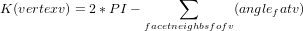
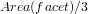
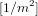
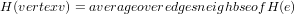
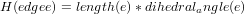
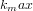
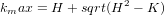
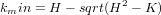
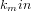

Section: Visualization Toolkit Graphics Classes
Gauss Curvature discrete Gauss curvature (K) computation, 
Mean Curvature  NB: dihedral_angle is the ORIENTED angle between -PI and PI, this means that the surface is assumed to be orientable the computation creates the orientation The units of Mean Curvature are [1/m]
 Excepting spherical and planar surfaces which have equal principal curvatures, the curvature at a point on a surface varies with the direction one "sets off" from the point. For all directions, the curvature will pass through two extrema:  directions to each other.
NB. The sign of the Gauss curvature is a geometric ivariant, it should be +ve when the surface looks like a sphere, -ve when it looks like a saddle, however, the sign of the Mean curvature is not, it depends on the convention for normals - This code assumes that normals point outwards (ie from the surface of a sphere outwards). If a given mesh produces curvatures of opposite senses then the flag InvertMeanCurvature can be set and the Curvature reported by the Mean calculation will be inverted.
.SECTION Thanks Philip Batchelor philipp.batchelor@kcl.ac.uk for creating and contributing the class and Andrew Maclean a.maclean@acfr.usyd.edu.au for cleanups and fixes. Thanks also to Goodwin Lawlor for contributing patch to calculate principal curvatures
To create an instance of class vtkCurvatures, simply invoke its constructor as follows
obj = vtkCurvatures
obj is an instance of the vtkCurvatures class.
string = obj.GetClassName ()
int = obj.IsA (string name)
vtkCurvatures = obj.NewInstance ()
vtkCurvatures = obj.SafeDownCast (vtkObject o)
obj.SetCurvatureType (int ) - Set/Get Curvature type
VTK_CURVATURE_GAUSS: Gaussian curvature, stored as
DataArray "Gauss_Curvature"
VTK_CURVATURE_MEAN : Mean curvature, stored as
DataArray "Mean_Curvature"
int = obj.GetCurvatureType () - Set/Get Curvature type
VTK_CURVATURE_GAUSS: Gaussian curvature, stored as
DataArray "Gauss_Curvature"
VTK_CURVATURE_MEAN : Mean curvature, stored as
DataArray "Mean_Curvature"
obj.SetCurvatureTypeToGaussian () - Set/Get Curvature type
VTK_CURVATURE_GAUSS: Gaussian curvature, stored as
DataArray "Gauss_Curvature"
VTK_CURVATURE_MEAN : Mean curvature, stored as
DataArray "Mean_Curvature"
obj.SetCurvatureTypeToMean () - Set/Get Curvature type
VTK_CURVATURE_GAUSS: Gaussian curvature, stored as
DataArray "Gauss_Curvature"
VTK_CURVATURE_MEAN : Mean curvature, stored as
DataArray "Mean_Curvature"
obj.SetCurvatureTypeToMaximum () - Set/Get Curvature type
VTK_CURVATURE_GAUSS: Gaussian curvature, stored as
DataArray "Gauss_Curvature"
VTK_CURVATURE_MEAN : Mean curvature, stored as
DataArray "Mean_Curvature"
obj.SetCurvatureTypeToMinimum () - Set/Get the flag which inverts the mean curvature calculation for
meshes with inward pointing normals (default false)
obj.SetInvertMeanCurvature (int ) - Set/Get the flag which inverts the mean curvature calculation for
meshes with inward pointing normals (default false)
int = obj.GetInvertMeanCurvature () - Set/Get the flag which inverts the mean curvature calculation for
meshes with inward pointing normals (default false)
obj.InvertMeanCurvatureOn () - Set/Get the flag which inverts the mean curvature calculation for
meshes with inward pointing normals (default false)
obj.InvertMeanCurvatureOff () - Set/Get the flag which inverts the mean curvature calculation for
meshes with inward pointing normals (default false)